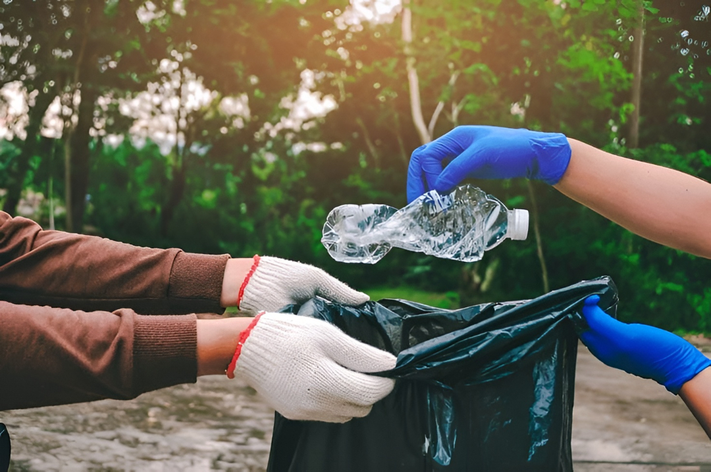
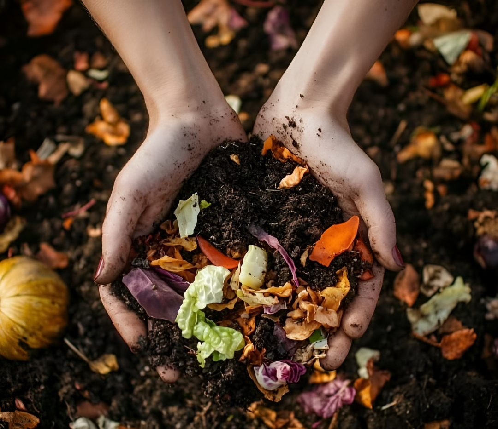
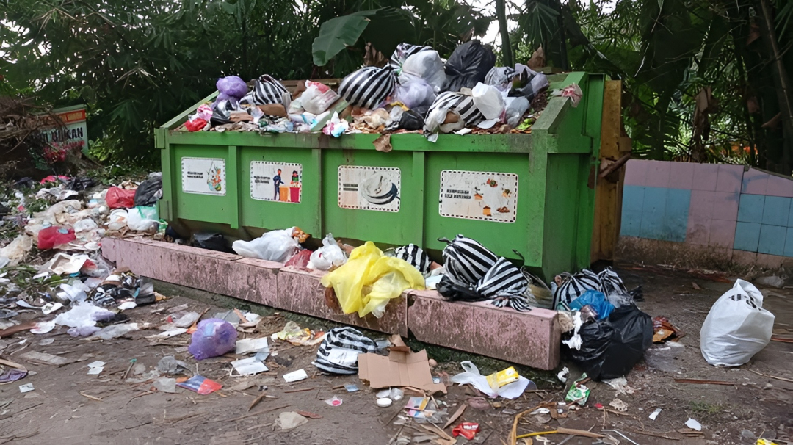

Lihat lebih dekat pada apa yang kita buang.
EcoVera adalah portal edukasi dan galeri dokumentasi lingkungan dengan fokus pada sampah: jenisnya, dampaknya, dan cara mengelolanya.
01 Sebuah taman, sebelum jejak kita.
02 Tempat yang sama. Dua kemungkinan.
02 Mengapa EcoVera ada
Catatan tentang alasan portal ini dibuat.
Sampah tidak hilang. Ia hanya berpindah tempat.
Sampah terlihat sebagai urusan petugas kebersihan, padahal sebagian besar keputusannya terjadi di rumah: apa yang dibeli, dipakai, dan dibuang.
Informasi yang jelas membantu orang mengambil keputusan itu dengan sadar. Karena itu EcoVera menyusun penjelasan yang runtut, dengan sumber yang bisa diperiksa.

03 Apa itu EcoVera
Portal edukasi dan galeri dokumentasi lingkungan.

Fokusnya satu: sampah — jenisnya, dampaknya, dan cara mengelolanya. Dari apa yang kita buang di dapur, sampai ke mana ia berakhir.
Mengapa EcoVera ada
Sampah terlihat sebagai urusan petugas kebersihan, padahal sebagian besar keputusannya terjadi di rumah: apa yang dibeli, dipakai, dan dibuang.
Informasi yang jelas membantu orang mengambil keputusan itu dengan sadar.
“Menyajikan informasi sampah yang akurat, bersumber, dan mudah dipahami.” Misi EcoVera

04 Yang kami amati
Enam pembahasan, satu pertanyaan yang sama.
Apa yang terjadi setelah kita membuangnya? Setiap topik di EcoVera bermuara pada pertanyaan itu.
-
01
Memahami sampah
Apa itu sampah dan dari mana ia muncul.

-
02
Jenis sampah
Organik, anorganik, B3 rumah tangga, dan residu.
-
03
Dampak
Dari saluran air ke sungai, laut, dan mikroplastik.

-
04
Pemilahan & pengelolaan
Dari rumah, bank sampah, hingga TPS3R.

-
05
Prinsip 3R
Kurangi, gunakan ulang, daur ulang — dalam urutan itu.

-
06
Kesadaran
Pengetahuan yang berubah menjadi kebiasaan.

05 Yang kami pegang
Prinsip di balik setiap tulisan.
-
01
Akurat dan bersumber
Menyajikan informasi sampah yang akurat, bersumber, dan mudah dipahami. Untuk angka terbaru, EcoVera mengarahkan pembaca ke sumber resmi seperti SIPSN Kementerian Lingkungan Hidup.
-
02
Mudah dipahami
Pembahasan yang rumit disusun supaya bisa dipahami siapa saja, tanpa menghilangkan konteks dan sumbernya.
-
03
Berpihak pada tindakan
Pengetahuan baru berguna bila berubah menjadi kebiasaan — mulai dari satu langkah konkret di rumah.
-
04
Terbuka pada koreksi
Data bisa berubah dan bisa keliru. EcoVera membuka ruang untuk koreksi dan menyebutkan sumber rujukan di setiap pembahasan.